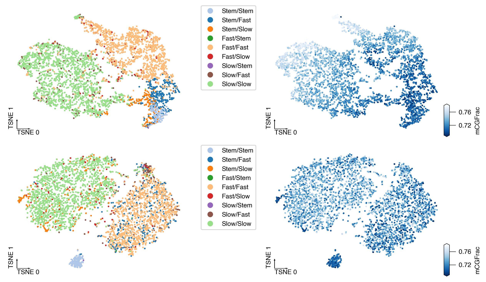

2. MusSkl donor clustering#
Part of the Fig. 6 chapter — see it for the panel-by-panel map. The first code cell sets ENTEX_ROOT and activates the no-overwrite guard (see the Reproduction guide). Outputs shown are the author’s original run.
📥 Required input files#
This notebook reads the following files (paths resolve from ENTEX_ROOT/REF_ROOT; the setup cell sets them). See the chapter’s inputs.md for RAW-vs-derived tags.
f'{indir}npc.tsv'· metadataf'{indir}L2/{ct}/5kCG_embed.h5ad'· embedding h5adf'{indir}L2/{ct}/100k3C_embed.h5ad'· embedding h5ad'Mus-Skl/5kCG100k3C_embed.h5ad'· embedding h5adf'{indir}embedding/SkGcn/cell_table.tsv'· tablef'{indir}embedding/SkGcn/{chrom}.npz'· otherf'Mus-Skl/{mode}_{xx}_embed.h5ad'· embedding h5ad'Mus-Skl/5kCG100k3C_embed_new.h5ad'· embedding h5adf'{ENTEX_ROOT}/allclist.tsv'· sc/pseudobulk mC (allc)
# === Reproduction setup — edit ENTEX_ROOT / REF_ROOT for your machine ===
import os, sys
ENTEX_ROOT = os.environ.get('ENTEX_ROOT', '/large_storage/zhoulab/zhoujt/project/ENTEx')
REF_ROOT = os.environ.get('REF_ROOT', '/large_storage/zhoulab/ref')
BOOK_ROOT = os.environ.get('BOOK_ROOT', f'{ENTEX_ROOT}/analysis/HumanCellEpigenomeAtlas')
sys.path.insert(0, BOOK_ROOT)
os.chdir(f'{ENTEX_ROOT}/analysis') # original working directory
import repro_guard # no-overwrite guard (default: skip existing)
import os
from glob import glob
import numpy as np
import pandas as pd
import matplotlib as mpl
import matplotlib.pyplot as plt
import seaborn as sns
import cooler
import anndata
import scanpy as sc
import scanpy.external as sce
from ALLCools.clustering import *
from ALLCools.plot import *
from ALLCools.mcds import MCDS
from sklearn.decomposition import TruncatedSVD
from sklearn.preprocessing import normalize
# mpl.use('agg')
mpl.style.use("default")
mpl.rcParams["pdf.fonttype"] = 42
mpl.rcParams["ps.fonttype"] = 42
mpl.rcParams["font.family"] = "sans-serif"
mpl.rcParams["font.sans-serif"] = "Helvetica"
import warnings
warnings.filterwarnings("ignore")
def dump_embedding(adata, name, n_dim=2):
# put manifold coordinates into adata.obs
for i in range(n_dim):
adata.obs[f'{name}_{i}'] = adata.obsm[f'X_{name}'][:, i]
return adata
indir = f'{ENTEX_ROOT}/clustering/merged/'
outdir = f'{ENTEX_ROOT}/analysis/pairwise_prediction/'
ct = 'Mus-Skl'
npc = pd.read_csv(f'{indir}npc.tsv', sep='\t', header=None, index_col=0, names=['npc_cg', 'npc_3c'])
adata_mc = anndata.read_h5ad(f'{indir}L2/{ct}/5kCG_embed.h5ad')
adata_3c = anndata.read_h5ad(f'{indir}L2/{ct}/100k3C_embed.h5ad')
adata_3c = adata_3c[adata_mc.obs.index].copy()
adata = anndata.read_h5ad('Mus-Skl/5kCG100k3C_embed.h5ad')
adata
AnnData object with n_obs × n_vars = 3973 × 0
obs: 'FinalmCReads', 'mCHFrac', 'mCGFrac', 'CisLongContact', 'Cis/Trans', 'Donor', 'Tissue', 'celltype', 'ClusterTissue', 'tsne_0', 'tsne_1', 'leiden_cons', 'leiden_cv', 'leiden_init', 'leiden_init_mc', 'leiden_init_3c', 'leiden_group_mc', 'leiden_group_3c', 'group_mc_3c'
obsm: '5kCG100k3C_u7pc10', '5kCG100k3C_u7pc10_tsne', 'X_tsne'
adata.obs['Donor'].value_counts()
Donor
PT-1K2DA 2152
PT-1LVAN 1821
Name: count, dtype: int64
Using uncorrected embedding#
def rename_cluster(xx):
yy = xx.replace('-','/').replace('mc','').replace('3c','')
yy = yy.replace('0', 'Stem').replace('1', 'Fast').replace('2', 'Slow')
return yy
leg = np.sort(adata.obs['group_mc_3c'].unique())
k1, k2 = 0, 0
color_palette = {}
for xx in leg:
x1, x2 = xx.split('-')
if x1[1:]==x2[1:]:
color_palette[rename_cluster(xx)] = sns.color_palette('tab20')[k1*2+1]
k1 += 1
else:
color_palette[rename_cluster(xx)] = sns.color_palette('tab20')[k2*2]
k2 += 1
adata_list = []
for obsm_key, raw_key, adata_tmp in zip(['X_lsi', 'X_pca'], ['5kCG_lsi', '100k3C_pca'], [adata_mc, adata_3c]):
for xx in adata.obs['Donor'].unique():
tmp = adata_tmp[adata_tmp.obs['Donor']==xx].copy()
# npc = significant_pc_test(tmp, p_cutoff=0.05, obsm=obsm_key, update=False)
# tmp.obsm[obsm_key] = normalize(tmp.obsm[raw_key][:, :10], axis=1)
tsne(tmp, obsm=obsm_key, metric='euclidean', exaggeration=-1, perplexity=50, n_jobs=-1)
sc.pp.neighbors(tmp, n_neighbors=25, use_rep=obsm_key)
sc.tl.leiden(tmp, resolution=0.5, random_state=0, flavor='igraph')
adata_list.append(tmp.copy())
print(obsm_key, xx)
X_lsi PT-1K2DA
X_lsi PT-1LVAN
X_pca PT-1K2DA
X_pca PT-1LVAN
# clustering name
clustering_name = 'L1'
# ConsensusClustering
# Important factores
n_neighbors = 25
leiden_resolution = 0.1
# this parameter is the final target that limit the total number of clusters
# Higher accuracy means more conservative clustering results and less number of clusters
target_accuracy = 0.9
min_cluster_size = 50
# Other ConsensusClustering parameters
metric = 'euclidean'
consensus_rate = 0.8
leiden_repeats = 500
random_state = 0
train_frac = 0.5
train_max_n = 500
max_iter = 50
n_jobs = 32
# Dendrogram via Multiscale Bootstrap Resampling
nboot = 10000
method_dist = 'correlation'
method_hclust = 'average'
plot_type = 'static'
cc = ConsensusClustering(model=None,
n_neighbors=n_neighbors,
metric=metric,
min_cluster_size=min_cluster_size,
leiden_repeats=leiden_repeats,
leiden_resolution=leiden_resolution,
consensus_rate=consensus_rate,
random_state=random_state,
train_frac=train_frac,
train_max_n=train_max_n,
max_iter=max_iter,
n_jobs=n_jobs,
target_accuracy=target_accuracy)
for tmp in adata_list:
sc.tl.leiden(tmp, resolution=0.1, random_state=0, flavor='igraph')
for i,obsm_key in enumerate(['X_lsi', 'X_pca']):
for j,xx in enumerate(adata.obs['Donor'].unique()):
tmp = adata_list[i*2+j]
cc.fit_predict(tmp.obsm[obsm_key])
tmp.obs['consensus_leiden_init'] = cc.label.copy()
Computing nearest neighbor graph
Computing multiple clustering with different random seeds
Repeating leiden clustering 500 times
Found 2 - 3 clusters, mean 2.7, std 0.47
Summarizing multiple clustering results
2142 cells assigned to 3 raw clusters
10 cells are multi-leiden outliers
=== Start supervise model training and cluster merging ===
=== iteration 1 ===
3 non-outlier labels
Balanced accuracy on the training set: 0.993
Balanced accuracy on the hold-out set: 0.970
Stop iteration because current accuracy 0.970 > target accuracy 0.900.
=== Assign final labels ===
Assigned all the multi-leiden clustering outliers into clusters using the prediction model from final clustering version.
Final ten-fold CV Accuracy on all the cells: 0.975
Computing nearest neighbor graph
Computing multiple clustering with different random seeds
Repeating leiden clustering 500 times
Found 3 - 3 clusters, mean 3.0, std 0.00
Summarizing multiple clustering results
1821 cells assigned to 2 raw clusters
0 cells are multi-leiden outliers
=== Start supervise model training and cluster merging ===
=== iteration 1 ===
3 non-outlier labels
Balanced accuracy on the training set: 0.994
Balanced accuracy on the hold-out set: 0.985
Stop iteration because current accuracy 0.985 > target accuracy 0.900.
=== Assign final labels ===
Assigned all the multi-leiden clustering outliers into clusters using the prediction model from final clustering version.
Final ten-fold CV Accuracy on all the cells: 0.986
Computing nearest neighbor graph
Computing multiple clustering with different random seeds
Repeating leiden clustering 500 times
Found 3 - 3 clusters, mean 3.0, std 0.00
Summarizing multiple clustering results
2147 cells assigned to 3 raw clusters
5 cells are multi-leiden outliers
=== Start supervise model training and cluster merging ===
=== iteration 1 ===
3 non-outlier labels
Balanced accuracy on the training set: 0.977
Balanced accuracy on the hold-out set: 0.977
Stop iteration because current accuracy 0.977 > target accuracy 0.900.
=== Assign final labels ===
Assigned all the multi-leiden clustering outliers into clusters using the prediction model from final clustering version.
Final ten-fold CV Accuracy on all the cells: 0.972
Computing nearest neighbor graph
Computing multiple clustering with different random seeds
Repeating leiden clustering 500 times
Found 3 - 3 clusters, mean 3.0, std 0.00
Summarizing multiple clustering results
1818 cells assigned to 3 raw clusters
3 cells are multi-leiden outliers
=== Start supervise model training and cluster merging ===
=== iteration 1 ===
3 non-outlier labels
Balanced accuracy on the training set: 0.990
Balanced accuracy on the hold-out set: 0.977
Stop iteration because current accuracy 0.977 > target accuracy 0.900.
=== Assign final labels ===
Assigned all the multi-leiden clustering outliers into clusters using the prediction model from final clustering version.
Final ten-fold CV Accuracy on all the cells: 0.988
for i in range(2):
for j in range(2):
tmp = adata_list[i*2+j]
tmp.obs['consensus_leiden_other'] = adata_list[(1-i)*2+j].obs['consensus_leiden_init'].values
adata_list[0].obs[['consensus_leiden_init','consensus_leiden_other']].value_counts().unstack()
| consensus_leiden_other | c0 | c1 | c2 |
|---|---|---|---|
| consensus_leiden_init | |||
| c0 | 1060 | 141 | 1 |
| c1 | 47 | 544 | 1 |
| c2 | 151 | 158 | 49 |
adata_list[1].obs[['consensus_leiden_init','consensus_leiden_other']].value_counts().unstack().fillna(0).astype(int)
| consensus_leiden_other | c0 | c1 | c2 |
|---|---|---|---|
| consensus_leiden_init | |||
| c0 | 800 | 23 | 0 |
| c1 | 35 | 767 | 1 |
| c2 | 70 | 40 | 85 |
Using donor separated embedding#
var_dim = 'chrom5k'
chrom_to_remove = ['chrX', 'chrY', 'chrM', 'chrL']
mcds_path_list = glob(f'{ENTEX_ROOT}/mcds/*mcds')
mcds = MCDS.open(mcds_path_list, var_dim=var_dim)
mcds = mcds.remove_chromosome(exclude_chromosome=chrom_to_remove, var_dim=var_dim)
mcds
42659 chrom5k features in ['chrX', 'chrY', 'chrM', 'chrL'] removed.
<xarray.MCDS> Size: 108GB
Dimensions: (cell: 93550, chrom5k: 575010)
Coordinates:
* cell (cell) <U34 13MB 'PBMC_11714_Plate1-1-A1-A1' ....
* chrom5k (chrom5k) <U11 25MB 'chr1_0' ... 'chr9_27678'
chrom5k_chrom (chrom5k) <U5 12MB dask.array<chunksize=(38605,), meta=np.ndarray>
chrom5k_end (chrom5k) int64 5MB dask.array<chunksize=(77209,), meta=np.ndarray>
chrom5k_start (chrom5k) int64 5MB dask.array<chunksize=(77209,), meta=np.ndarray>
Data variables:
chrom5k_da_CGN-hypo-score (cell, chrom5k) float16 108GB dask.array<chunksize=(7, 77209), meta=np.ndarray>
Attributes:
obs_dim: cell
var_dim: chrom5kmcds = mcds.sel(cell=adata.obs.index)
mcds
<xarray.MCDS> Size: 5GB
Dimensions: (cell: 3973, chrom5k: 575010)
Coordinates:
* cell (cell) <U34 540kB 'SkGcn_C1MKW_Plate1-1-O3-A1'...
* chrom5k (chrom5k) <U11 25MB 'chr1_0' ... 'chr9_27678'
chrom5k_chrom (chrom5k) <U5 12MB dask.array<chunksize=(38605,), meta=np.ndarray>
chrom5k_end (chrom5k) int64 5MB dask.array<chunksize=(77209,), meta=np.ndarray>
chrom5k_start (chrom5k) int64 5MB dask.array<chunksize=(77209,), meta=np.ndarray>
Data variables:
chrom5k_da_CGN-hypo-score (cell, chrom5k) float16 5GB dask.array<chunksize=(4, 77209), meta=np.ndarray>
Attributes:
obs_dim: cell
var_dim: chrom5kmcad = mcds.get_score_adata(mc_type='CGN', quant_type='hypo')
binarize_matrix(mcad, cutoff=0.95)
Loading chunk 0-3973/3973
black_list_path = f'{REF_ROOT}/blacklist/hg38-blacklist.v2.bed.gz'
filter_regions(mcad, n_cell=5)
remove_black_list_region(mcad, black_list_path=black_list_path)
489595 regions remained.
10035 regions removed due to overlapping (bedtools intersect -f 0.2) with black list regions.
mcad.write_h5ad(f'{indir}L2/{ct}/5kCG.h5ad')
model = LSI(scale_factor=10000,
n_components=50,
algorithm='arpack',
random_state=0)
raw_key = '5kCG_lsi'
obsm_key = 'X_lsi'
adata_mc_list = []
for xx in adata.obs['Donor'].unique():
tmp = mcad[adata.obs['Donor']==xx].copy()
model.fit_transform(tmp, obsm_name='5kCG_lsi')
npc = significant_pc_test(tmp, p_cutoff=0.1, obsm=raw_key, update=False)
tmp.obsm[obsm_key] = normalize(tmp.obsm[raw_key][:, :npc], axis=1)
tsne(tmp, obsm=obsm_key, metric='euclidean', exaggeration=-1, perplexity=50, n_jobs=-1)
adata_mc_list.append(tmp.copy())
print(obsm_key, xx)
5 components passed P cutoff of 0.05.
X_lsi PT-1K2DA
11 components passed P cutoff of 0.05.
X_lsi PT-1LVAN
chrom_size_path = f'{REF_ROOT}/hg38/fasta/hg38.main.chrom.sizes'
chrom_sizes = cooler.read_chromsizes(chrom_size_path, all_names=True)
chrom_sizes = chrom_sizes.iloc[:22]
indir = f'{ENTEX_ROOT}/'
dim = 50
cell_list = pd.read_csv(f'{indir}embedding/SkGcn/cell_table.tsv', index_col=0, header=None, sep='\t')
cell_list['index'] = np.arange(cell_list.shape[0])
matrix = [[], []]
for chrom in chrom_sizes.index:
data = np.load(f'{indir}embedding/SkGcn/{chrom}.npz')['arr_0']
for i,xx in enumerate(adata.obs['Donor'].unique()):
selc = adata.obs.index[adata.obs['Donor']==xx]
tmp = data[cell_list.loc[selc, 'index'].values]
dim = min(dim, tmp.shape[0] - 1, tmp.shape[1] - 1)
model = TruncatedSVD(n_components=dim, algorithm='arpack')
tmp_reduce = model.fit_transform(tmp)
matrix[i].append(tmp_reduce / model.singular_values_)
print(chrom)
chr1
chr2
chr3
chr4
chr5
chr6
chr7
chr8
chr9
chr10
chr11
chr12
chr13
chr14
chr15
chr16
chr17
chr18
chr19
chr20
chr21
chr22
raw_key = '100k3C_pca'
obsm_key = 'X_pca'
model = TruncatedSVD(n_components=dim, algorithm='arpack')
adata_3c_list = []
for i,xx in enumerate(adata.obs['Donor'].unique()):
selc = adata.obs.index[adata.obs['Donor']==xx]
tmp = anndata.AnnData(X=np.concatenate(matrix[i], axis=1), obs=adata.obs.loc[selc].copy())
tmp.obsm[raw_key] = model.fit_transform(tmp.X)
tmp.uns['100k3C_eigen'] = model.singular_values_.copy()
npc = significant_pc_test(tmp, p_cutoff=0.1, obsm=raw_key, update=False)
tmp.obsm[obsm_key] = normalize(tmp.obsm[raw_key][:, :npc], axis=1)
tsne(tmp, obsm=obsm_key, metric='euclidean', exaggeration=-1, perplexity=50, n_jobs=-1)
adata_3c_list.append(tmp.copy())
print(obsm_key, xx)
7 components passed P cutoff of 0.05.
X_pca PT-1K2DA
6 components passed P cutoff of 0.05.
X_pca PT-1LVAN
for i,xx in enumerate(adata.obs['Donor'].unique()):
tmp = adata_3c_list[i].copy()
tmp = anndata.AnnData(obs=tmp.obs, obsm=tmp.obsm)
tmp.write_h5ad(f'Mus-Skl/100k3C_{xx}_embed.h5ad')
tmp = adata_mc_list[i].copy()
tmp = anndata.AnnData(obs=tmp.obs, obsm=tmp.obsm)
tmp.write_h5ad(f'Mus-Skl/5kCG_{xx}_embed.h5ad')
adata_list = []
for mode in ['5kCG', '100k3C']:
for xx in adata.obs['Donor'].unique():
tmp = anndata.read_h5ad(f'Mus-Skl/{mode}_{xx}_embed.h5ad')
adata_list.append(tmp.copy())
print(mode, xx)
5kCG PT-1K2DA
5kCG PT-1LVAN
100k3C PT-1K2DA
100k3C PT-1LVAN
# clustering name
clustering_name = 'L1'
# ConsensusClustering
# Important factores
n_neighbors = 25
leiden_resolution = 0.1
# this parameter is the final target that limit the total number of clusters
# Higher accuracy means more conservative clustering results and less number of clusters
target_accuracy = 0.9
min_cluster_size = 50
# Other ConsensusClustering parameters
metric = 'euclidean'
consensus_rate = 0.8
leiden_repeats = 500
random_state = 0
train_frac = 0.5
train_max_n = 500
max_iter = 50
n_jobs = 32
# Dendrogram via Multiscale Bootstrap Resampling
nboot = 10000
method_dist = 'correlation'
method_hclust = 'average'
plot_type = 'static'
cc = ConsensusClustering(model=None,
n_neighbors=n_neighbors,
metric=metric,
min_cluster_size=min_cluster_size,
leiden_repeats=leiden_repeats,
leiden_resolution=leiden_resolution,
consensus_rate=consensus_rate,
random_state=random_state,
train_frac=train_frac,
train_max_n=train_max_n,
max_iter=max_iter,
n_jobs=n_jobs,
target_accuracy=target_accuracy)
# for i,obsm_key in enumerate(['X_lsi', 'X_pca']]):
i = 1
obsm_key = 'X_pca'
for j,xx in enumerate(adata.obs['Donor'].unique()):
tmp = adata_list[i*2+j]
cc.fit_predict(tmp.obsm[obsm_key])
tmp.obs['consensus_leiden_init'] = cc.label.copy()
Computing nearest neighbor graph
Computing multiple clustering with different random seeds
Repeating leiden clustering 500 times
Found 2 - 3 clusters, mean 3.0, std 0.06
Summarizing multiple clustering results
2152 cells assigned to 2 raw clusters
0 cells are multi-leiden outliers
=== Start supervise model training and cluster merging ===
=== iteration 1 ===
3 non-outlier labels
Balanced accuracy on the training set: 0.964
Balanced accuracy on the hold-out set: 0.952
Stop iteration because current accuracy 0.952 > target accuracy 0.900.
=== Assign final labels ===
Assigned all the multi-leiden clustering outliers into clusters using the prediction model from final clustering version.
Final ten-fold CV Accuracy on all the cells: 0.969
Computing nearest neighbor graph
Computing multiple clustering with different random seeds
Repeating leiden clustering 500 times
Found 3 - 3 clusters, mean 3.0, std 0.00
Summarizing multiple clustering results
1821 cells assigned to 2 raw clusters
0 cells are multi-leiden outliers
=== Start supervise model training and cluster merging ===
=== iteration 1 ===
3 non-outlier labels
Balanced accuracy on the training set: 0.988
Balanced accuracy on the hold-out set: 0.989
Stop iteration because current accuracy 0.989 > target accuracy 0.900.
=== Assign final labels ===
Assigned all the multi-leiden clustering outliers into clusters using the prediction model from final clustering version.
Final ten-fold CV Accuracy on all the cells: 0.986
for i in range(2):
for j in range(2):
tmp = adata_list[i*2+j]
tmp.obs['consensus_leiden_other'] = adata_list[(1-i)*2+j].obs['consensus_leiden_init'].values
adata_list[0].obs[['consensus_leiden_init','consensus_leiden_other']].value_counts().unstack().fillna(0).astype(int)
| consensus_leiden_other | c0 | c1 | c2 |
|---|---|---|---|
| consensus_leiden_init | |||
| c0 | 1053 | 152 | 3 |
| c1 | 52 | 497 | 0 |
| c2 | 143 | 202 | 50 |
adata_list[1].obs[['consensus_leiden_init','consensus_leiden_other']].value_counts().unstack().fillna(0).astype(int)
| consensus_leiden_other | c0 | c1 | c2 |
|---|---|---|---|
| consensus_leiden_init | |||
| c0 | 774 | 36 | 1 |
| c1 | 21 | 773 | 1 |
| c2 | 89 | 41 | 85 |
adata.obs['leiden_group_mc'] = 'm' + pd.concat([adata_list[0].obs['consensus_leiden_init'].astype(str).map({'c2':'c0','c0':'c2','c1':'c1'}), adata_list[1].obs['consensus_leiden_init'].astype(str).map({'c2':'c0','c0':'c1','c1':'c2'})])
adata.obs['leiden_group_3c'] = '3' + pd.concat([adata_list[2].obs['consensus_leiden_init'].astype(str).map({'c2':'c0','c0':'c2','c1':'c1'}), adata_list[3].obs['consensus_leiden_init'].astype(str).map({'c2':'c0','c0':'c1','c1':'c2'})])
count = adata.obs[['leiden_group_mc', 'leiden_group_3c']].value_counts().unstack()
count
| leiden_group_3c | 3c0 | 3c1 | 3c2 |
|---|---|---|---|
| leiden_group_mc | |||
| mc0 | 135 | 291 | 184 |
| mc1 | 1 | 1271 | 88 |
| mc2 | 4 | 173 | 1826 |
adata.obs['group_mc_3c_old'] = adata.obs['group_mc_3c'].copy()
adata.obs['group_mc_3c_old'] = adata.obs['group_mc_3c_old'].map(rename_cluster)
adata.obs['group_mc_3c'] = adata.obs['leiden_group_mc'].astype(str) + '-' + adata.obs['leiden_group_3c'].astype(str)
adata.obs['group_mc_3c'] = adata.obs['group_mc_3c'].map(rename_cluster)
data = adata.obs.loc[~adata.obs['group_mc_3c'].isin(['Fast/Stem', 'Slow/Stem'])]
data['group_mc_3c'] = data['group_mc_3c'].astype(str)
adata
AnnData object with n_obs × n_vars = 3973 × 0
obs: 'FinalmCReads', 'mCHFrac', 'mCGFrac', 'CisLongContact', 'Cis/Trans', 'Donor', 'Tissue', 'celltype', 'ClusterTissue', 'tsne_0', 'tsne_1', 'leiden_cons', 'leiden_cv', 'leiden_init', 'leiden_init_mc', 'leiden_init_3c', 'leiden_group_mc', 'leiden_group_3c', 'group_mc_3c', 'group_mc_3c_old'
obsm: '5kCG100k3C_u7pc10', '5kCG100k3C_u7pc10_tsne', 'X_tsne'
ds = 4
coord_base = 'tsne'
fig, axes = plt.subplots(2, 2, figsize=(8,5), dpi=300)
for i,adata_tmp in enumerate([adata_mc, adata_3c]):
tmp = adata_tmp.obs.copy()
tmp['group_mc_3c'] = adata.obs['group_mc_3c'].astype(str)
tmp['group_mc_3c'] = tmp['group_mc_3c'].map(rename_cluster)
ax = axes[i,0]
_ = categorical_scatter(data=tmp,
ax=ax,
coord_base=coord_base,
hue='group_mc_3c',
# text_anno='group_mc_3c',
s=ds,
labelsize=8,
max_points=None,
palette=color_palette,
scatter_kws={'rasterized':True},
# legend_kws={'ncol':1},
show_legend=True
)
ax = axes[i,1]
_ = continuous_scatter(data=tmp,
ax=ax,
coord_base=coord_base,
hue=adata.obs['mCGFrac'],
s=ds,
cmap='Blues_r',
labelsize=8,
max_points=None,
scatter_kws={'rasterized':True},
hue_norm=[0.69, 0.78],
)
fig.tight_layout()
fig.savefig('Mus-Skl/mC_3C_embed_group_mCG_new.pdf', transparent=True)

for i,mode in enumerate(['5kCG', '100k3C']):
for j,xx in enumerate(adata.obs['Donor'].unique()):
tmp = adata_list[i*2+j].copy()
tmp.write_h5ad(f'Mus-Skl/{mode}_{xx}_embed.h5ad')
adata_list = []
for i,mode in enumerate(['5kCG', '100k3C']):
for j,xx in enumerate(adata.obs['Donor'].unique()):
tmp = anndata.read_h5ad(f'Mus-Skl/{mode}_{xx}_embed.h5ad')
adata_list.append(tmp)
adata.obs['leiden_group_mc'] = 'm' + pd.concat([adata_list[0].obs['consensus_leiden_init'].astype(str).map({'c2':'c0','c0':'c2','c1':'c1'}), adata_list[1].obs['consensus_leiden_init'].astype(str).map({'c2':'c0','c0':'c1','c1':'c2'})])
adata.obs['leiden_group_3c'] = '3' + pd.concat([adata_list[2].obs['consensus_leiden_init'].astype(str).map({'c2':'c0','c0':'c2','c1':'c1'}), adata_list[3].obs['consensus_leiden_init'].astype(str).map({'c2':'c0','c0':'c1','c1':'c2'})])
adata.obs['group_mc_3c_old'] = adata.obs['group_mc_3c'].copy()
adata.obs['group_mc_3c_old'] = adata.obs['group_mc_3c_old'].map(rename_cluster)
adata.obs['group_mc_3c'] = adata.obs['leiden_group_mc'].astype(str) + '-' + adata.obs['leiden_group_3c'].astype(str)
adata.obs['group_mc_3c'] = adata.obs['group_mc_3c'].map(rename_cluster)
pd.DataFrame([adata.obs['group_mc_3c_old'].str.split('/').str[0], adata.obs['group_mc_3c'].str.split('/').str[0]], index=['old', 'new']).T.value_counts()
old new
Slow Slow 1957
Fast Fast 1234
Stem Stem 496
Slow Fast 125
Fast Stem 90
Slow 40
Slow Stem 24
Stem Slow 6
Fast 1
Name: count, dtype: int64
ct1, ct2 = 'Fast', 'Stem'
# ct1, ct2 = 'Slow', 'Fast'
selc = adata.obs.index[(adata.obs['group_mc_3c_old'].str.split('/').str[0]==ct1) & (adata.obs['group_mc_3c'].str.split('/').str[0]==ct2)]
np.savetxt(f'Mus-Skl/allc/allclist_mc{ct1}_mc{ct2}.txt', f'{ENTEX_ROOT}/allc/' + selc + '.CGN-Both.allc.tsv.gz', fmt='%s')
print((1957+1234+496)/3973, (125+40)/(125+90+40+24+6+1))
0.9280140951422099 0.5769230769230769
pd.DataFrame([adata.obs['group_mc_3c_old'].str.split('/').str[1], adata.obs['group_mc_3c'].str.split('/').str[1]], index=['old', 'new']).T.value_counts()
old new
Slow Slow 2043
Fast Fast 1683
Stem Stem 136
Fast Slow 54
Slow Fast 50
Fast Stem 4
Stem Fast 2
Slow 1
Name: count, dtype: int64
print((2043+1683+136)/3973, (54+50)/(54+50+7))
0.9720614145482004 0.9369369369369369
(adata.obs['group_mc_3c_old']==adata.obs['group_mc_3c']).sum()/3973
0.9048577900830607
adata.write_h5ad('Mus-Skl/5kCG100k3C_embed_new.h5ad')
adata = anndata.read_h5ad('Mus-Skl/5kCG100k3C_embed_new.h5ad')
adata
AnnData object with n_obs × n_vars = 3973 × 0
obs: 'FinalmCReads', 'mCHFrac', 'mCGFrac', 'CisLongContact', 'Cis/Trans', 'Donor', 'Tissue', 'celltype', 'ClusterTissue', 'tsne_0', 'tsne_1', 'leiden_cons', 'leiden_cv', 'leiden_init', 'leiden_init_mc', 'leiden_init_3c', 'leiden_group_mc', 'leiden_group_3c', 'group_mc_3c', 'group_mc_3c_old'
obsm: '5kCG100k3C_u7pc10', '5kCG100k3C_u7pc10_tsne', 'X_tsne'
adata.obs[['group_mc_3c', 'group_mc_3c_old']]
| group_mc_3c | group_mc_3c_old | |
|---|---|---|
| cell | ||
| SkGcn_C1MKW_Plate1-1-O3-A1 | Slow/Slow | Slow/Slow |
| SkGcn_C1MKW_Plate1-1-O3-A14 | Slow/Fast | Slow/Fast |
| SkGcn_C1MKW_Plate1-1-O3-B13 | Slow/Slow | Slow/Slow |
| SkGcn_C1MKW_Plate1-1-O3-B14 | Slow/Slow | Slow/Slow |
| SkGcn_C1MKW_Plate1-1-O3-B2 | Fast/Fast | Fast/Fast |
| ... | ... | ... |
| SkGcn_C1PWV_Plate8-6-O14-O12 | Fast/Fast | Fast/Fast |
| SkGcn_C1PWV_Plate8-6-O14-O24 | Slow/Slow | Slow/Slow |
| SkGcn_C1PWV_Plate8-6-O14-P12 | Stem/Fast | Stem/Fast |
| SkGcn_C1PWV_Plate8-6-O14-P23 | Fast/Fast | Fast/Fast |
| SkGcn_C1PWV_Plate8-6-O14-P24 | Fast/Fast | Fast/Fast |
3973 rows × 2 columns
adata.obs[['group_mc_3c_old', 'group_mc_3c']].value_counts().sort_index()
group_mc_3c_old group_mc_3c
Stem/Stem Slow/Stem 1
Stem/Fast 1
Stem/Slow 1
Stem/Stem 134
Stem/Fast Fast/Fast 1
Slow/Fast 1
Slow/Slow 1
Stem/Fast 192
Stem/Slow 4
Stem/Stem 1
Stem/Slow Slow/Slow 3
Stem/Fast 8
Stem/Slow 155
Fast/Stem Stem/Fast 1
Fast/Fast Fast/Fast 1154
Fast/Slow 11
Slow/Fast 15
Stem/Fast 79
Stem/Slow 1
Fast/Slow Fast/Fast 16
Fast/Slow 53
Slow/Fast 4
Slow/Slow 21
Stem/Fast 4
Stem/Slow 5
Slow/Stem Slow/Stem 1
Slow/Fast Fast/Fast 98
Fast/Slow 5
Fast/Stem 1
Slow/Fast 137
Slow/Slow 32
Slow/Stem 2
Stem/Fast 6
Slow/Slow Fast/Fast 2
Fast/Slow 19
Slow/Fast 16
Slow/Slow 1769
Stem/Slow 18
Name: count, dtype: int64
adata.obs[['group_mc_3c', 'group_mc_3c_old']].value_counts().sort_index()
group_mc_3c group_mc_3c_old
Fast/Fast Stem/Fast 1
Fast/Fast 1154
Fast/Slow 16
Slow/Fast 98
Slow/Slow 2
Fast/Slow Fast/Fast 11
Fast/Slow 53
Slow/Fast 5
Slow/Slow 19
Fast/Stem Slow/Fast 1
Slow/Fast Stem/Fast 1
Fast/Fast 15
Fast/Slow 4
Slow/Fast 137
Slow/Slow 16
Slow/Slow Stem/Fast 1
Stem/Slow 3
Fast/Slow 21
Slow/Fast 32
Slow/Slow 1769
Slow/Stem Stem/Stem 1
Slow/Stem 1
Slow/Fast 2
Stem/Fast Stem/Stem 1
Stem/Fast 192
Stem/Slow 8
Fast/Stem 1
Fast/Fast 79
Fast/Slow 4
Slow/Fast 6
Stem/Slow Stem/Stem 1
Stem/Fast 4
Stem/Slow 155
Fast/Fast 1
Fast/Slow 5
Slow/Slow 18
Stem/Stem Stem/Stem 134
Stem/Fast 1
Name: count, dtype: int64
allc_table = pd.read_csv(f'{ENTEX_ROOT}/allclist.tsv', sep='\t', index_col=0, header=None)
allc_table
| 1 | |
|---|---|
| 0 | |
| M1C_3C_001_Plate1-1-F3-A1 | /gale/netapp/entex/ENTEx/Pool_BVBW_M1C/output_... |
| M1C_3C_001_Plate1-1-F3-A2 | /gale/netapp/entex/ENTEx/Pool_BVBW_M1C/output_... |
| M1C_3C_001_Plate1-1-F3-B13 | /gale/netapp/entex/ENTEx/Pool_BVBW_M1C/output_... |
| M1C_3C_001_Plate1-1-F3-B14 | /gale/netapp/entex/ENTEx/Pool_BVBW_M1C/output_... |
| M1C_3C_001_Plate1-1-F3-B1 | /gale/netapp/entex/ENTEx/Pool_BVBW_M1C/output_... |
| ... | ... |
| Sk_IOBHT_AR_Plate7-6-I24-O24 | /gale/netapp/entex/ENTEx/Pool_EFEG_AG_LG_P_PI_... |
| Sk_IOBHT_AR_Plate7-6-I24-P11 | /gale/netapp/entex/ENTEx/Pool_EFEG_AG_LG_P_PI_... |
| Sk_IOBHT_AR_Plate7-6-I24-P12 | /gale/netapp/entex/ENTEx/Pool_EFEG_AG_LG_P_PI_... |
| Sk_IOBHT_AR_Plate7-6-I24-P23 | /gale/netapp/entex/ENTEx/Pool_EFEG_AG_LG_P_PI_... |
| Sk_IOBHT_AR_Plate7-6-I24-P24 | /gale/netapp/entex/ENTEx/Pool_EFEG_AG_LG_P_PI_... |
93550 rows × 1 columns
adata.obs['allcpath'] = '/gale/netapp/entex/ENTEx/allc_CGN/' + adata.obs.index + '.CGN-Both.allc.tsv.gz'
# adata.obs['allcpath'] = allc_table.loc[adata.obs.index, 1]
adata.obs['coolpath'] = 'gs://ecker-zhoujt-analysis/ENTEx/tissue/' + adata.obs['Tissue'].astype(str) + '/impute/10K/' + adata.obs.index + '.cool'
tmp = adata.obs[['leiden_group_mc', 'leiden_group_3c', 'allcpath', 'coolpath']].copy()
tmp['group_mc_3c'] = tmp['leiden_group_mc'].astype(str) + '-' + tmp['leiden_group_3c'].astype(str)
count = tmp['group_mc_3c'].value_counts()
tmp = tmp.loc[tmp['group_mc_3c'].isin(count.index[count>50])]
tmp[['allcpath', 'group_mc_3c']].to_csv('Mus-Skl/allclist_donor_mc3cgroup.csv', index=False, header=False)
tmp[['coolpath', 'group_mc_3c']].to_csv('Mus-Skl/coollist_donor_mc3cgroup.csv', index=True, header=False)